Dobrodošli u interaktivni beogradski vremeplov.
Dozvolite da vam ispričamo priču o nastanku i istoriji Beograda.
Za kretanje kroz vreme skrolujte naviše ili naniže. Za više informacija o objektima kliknite na objekat koji vas zanima.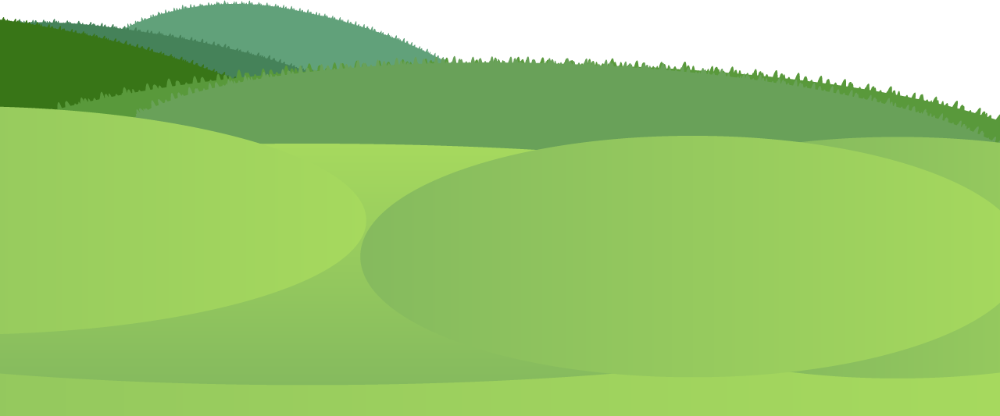
 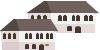
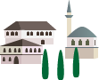
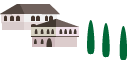
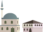
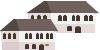
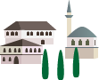
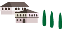
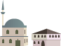
 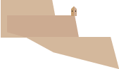
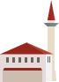
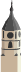
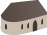
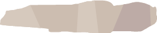
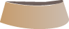
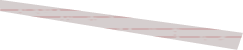
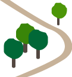
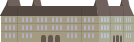
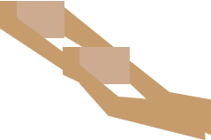
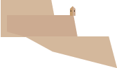
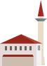
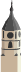
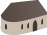
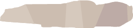
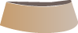
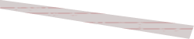
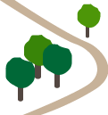
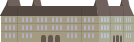
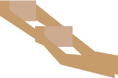

 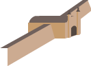
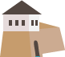
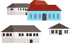
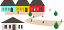
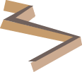
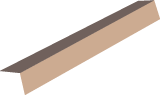
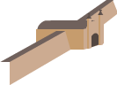
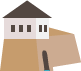
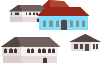
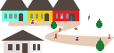
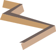
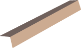
Od V do XV veka, Beograd je mnogo puta menjao vlasnike, bio rušen i ponovo građen. Malo je podataka iz tog vremena. Smenjuju se Ugari, Goti, Vizantija, Bugari, Mađari...